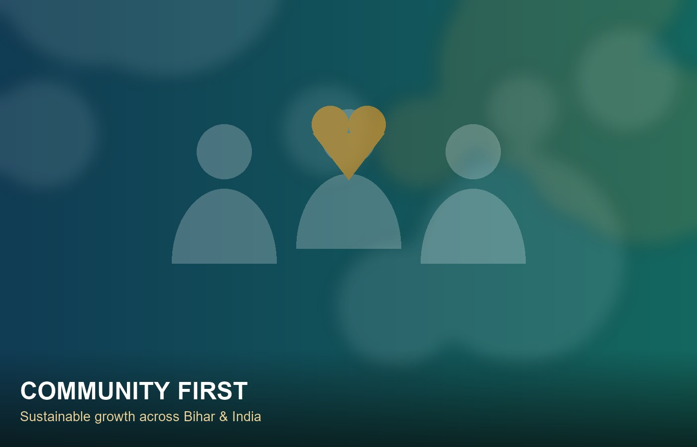

25
Aug
Volunteer Registration Now Open Active
We are welcoming volunteers, members and donors across Bihar and India. Join our mission through our interactive registration form.
हर हाथ में मदद का साथ — A Helping Hand for Every Need
MADAD WALLAH FOUNDATION is a non-profit Section 8 company incorporated under the Companies Act, 2013, dedicated to social welfare, health, education, and disaster relief — building stronger, self-reliant communities across Bihar and India.
Guided by our Memorandum of Association, we work where the need is greatest — from rural classrooms to crisis zones.
Promoting literacy, stationery kits, book distribution, and evening learning sessions for underprivileged children and youth.
Free diagnostic health camps, medicine distribution, hygiene drives, and awareness sessions for vulnerable families.
Skill development, tailoring & handicraft training, legal safety awareness, and financial self-reliance workshops.
Emergency response during floods, seasonal crises, and calamities — distributing food rations, warm clothes, and shelter aid.
Tree plantations, clean drinking water initiatives, sanitation improvement, and sustainable community development in rural areas.
Human rights awareness, community legal aid, elderly care, and dedicated upliftment initiatives for marginalized groups.
MADAD WALLAH FOUNDATION operates under Section 8 of the Companies Act, 2013, focusing on sustainable community growth, health awareness, literacy, and environmental protection across Bihar and India.
Headquartered in Rosera, Samastipur, our volunteer-driven teams work hand-in-hand with local communities — because real change begins at the grassroots.

Updates on programmes, outreach drives, and community events.
We are welcoming volunteers, members and donors across Bihar and India. Join our mission through our interactive registration form.
MADAD WALLAH FOUNDATION was incorporated on 12 August 2026 as a Section 8 non-profit company, licensed under the Companies Act, 2013.
Our founding team is planning the first educational support drive and health awareness camp in the Rosera block of Samastipur district.
Whether you give your time, your skills, or your financial support — every act of madad (help) moves a community forward.